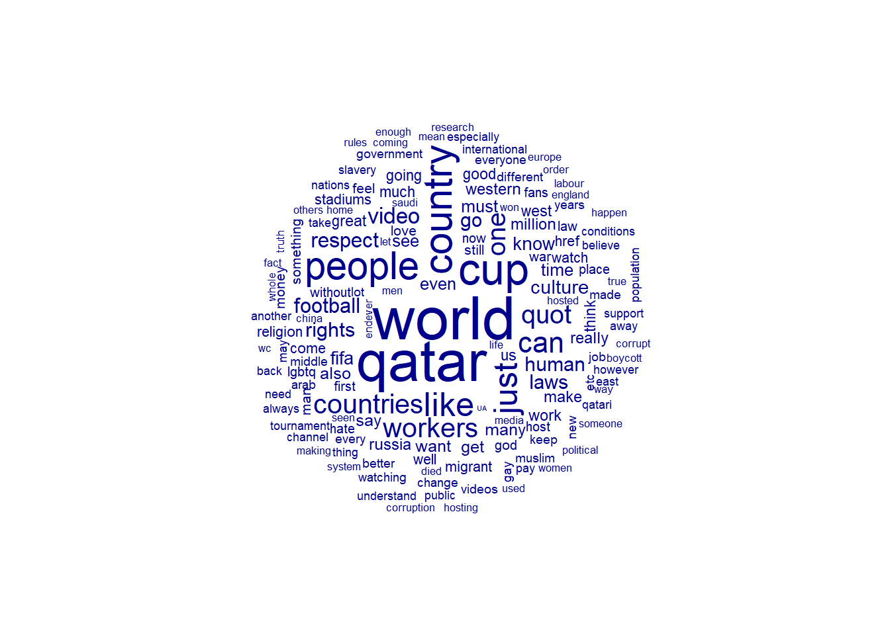
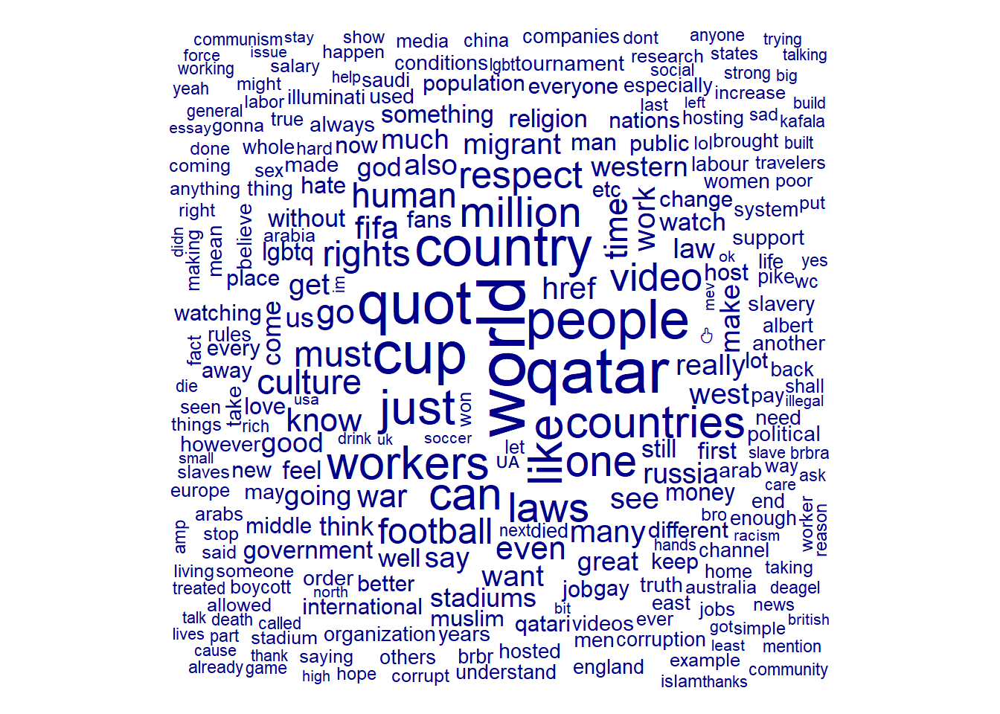
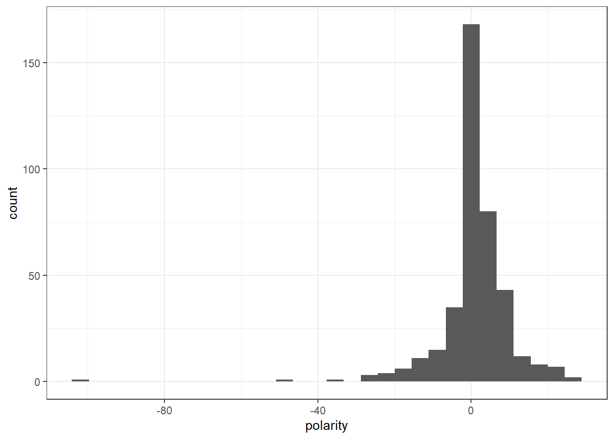
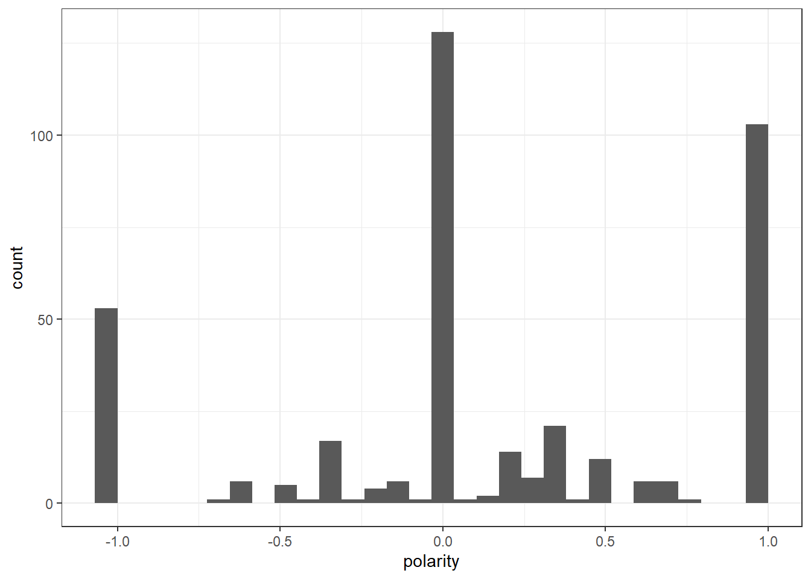
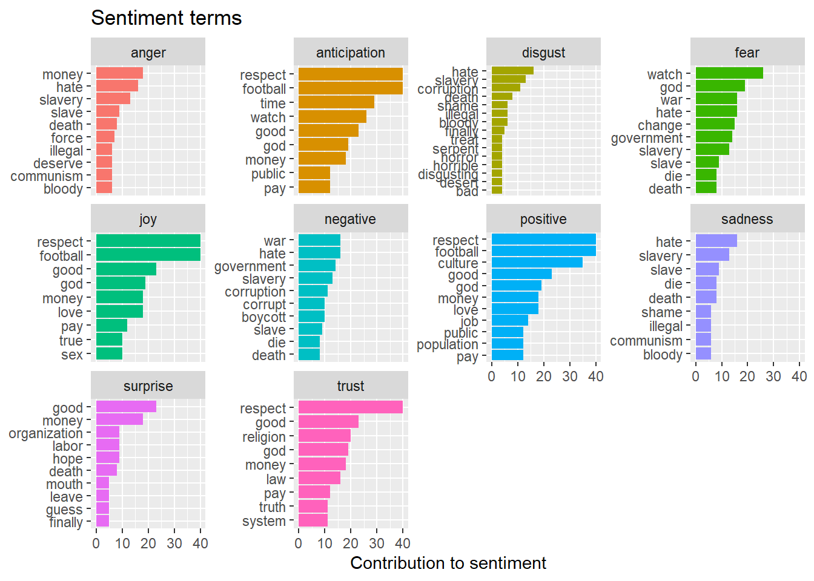
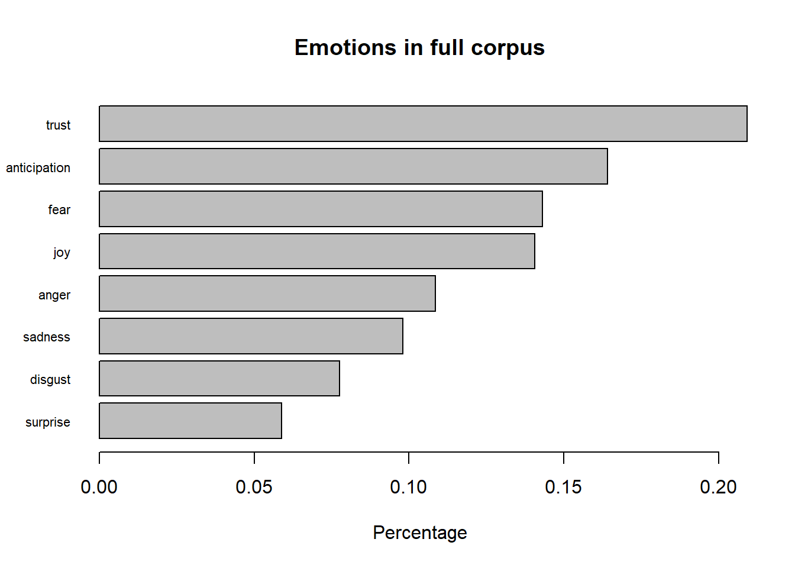
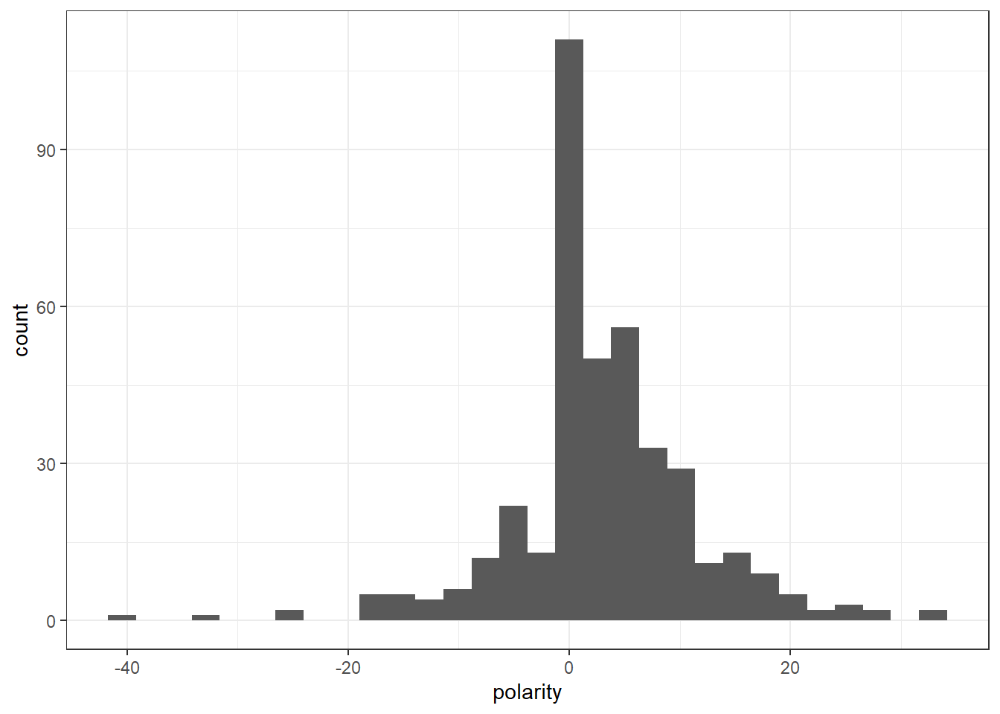
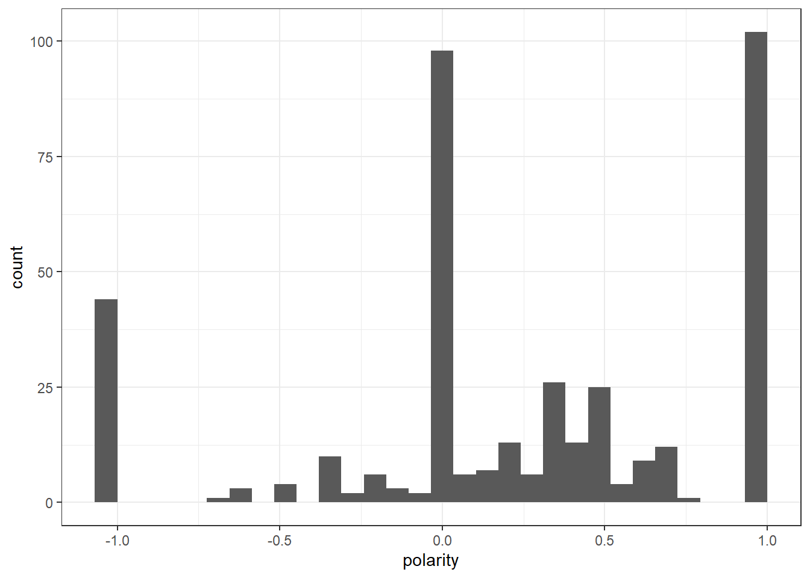
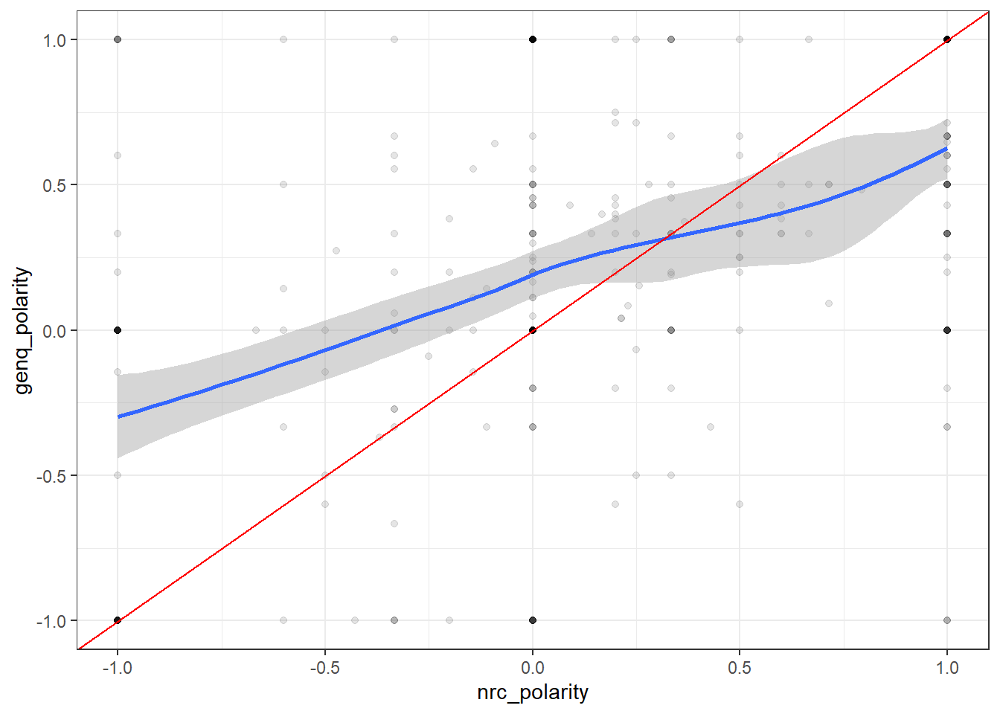
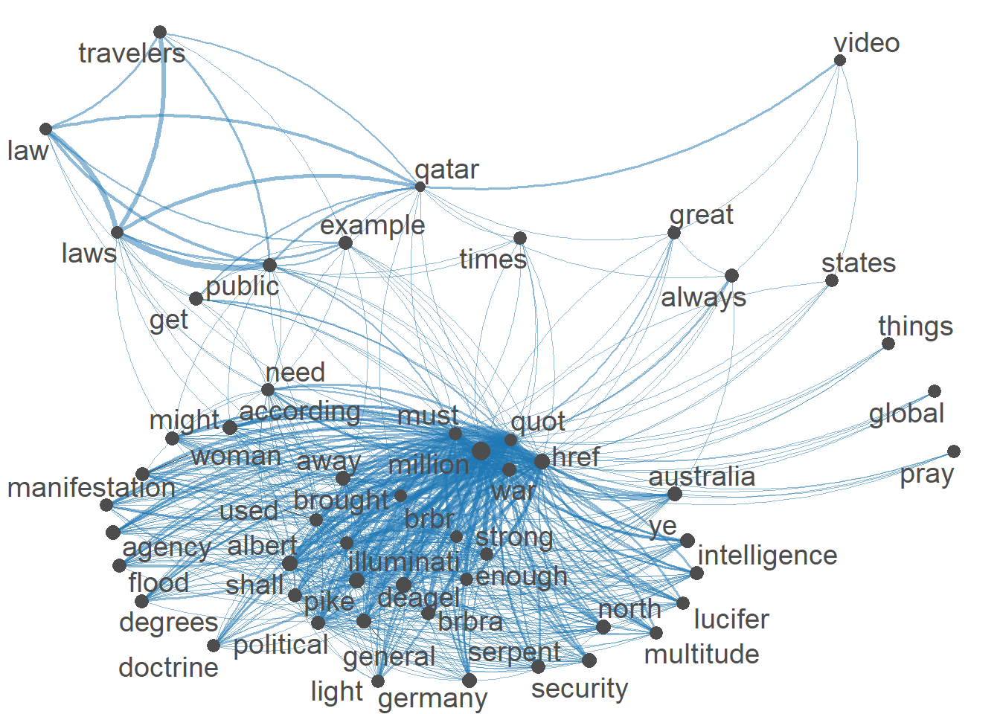

Code
library(tidyverse)
library(quanteda)
library(quanteda.textplots)
library(quanteda.textmodels)
library(ggplot2)
library(quanteda.dictionaries)
library(quanteda.sentiment)
library(syuzhet)
knitr::opts_chunk$set(echo = TRUE)Nayan Jani
November 7, 2022
Using Youtube API, I was able to extract comments from multiple videos covering the world cup in Qatar. One of the Videos is from Nov 13, 2021 and has 421,163 views and 1,862 comments. The reason that I chose this video is because it is the most interacted video on youtube that talks about some of the controversies that surround this years World Cup I Qatar. I realize that this video is not current but my goal does not include comparison of language and thoughts over a period of time. The Qatar World cup has been a controversy for years and the discussion leading up to it has not changed because of the possible human rights violations. The comments I have scraped are the top 100 most relevant comments and the top 100 most recent comments. This only leaves me with 400 comments to deal with at the moment . For now I will only keep it at 400 so that I can figure out my thought process for analysis but for my next blog post I will scrape more comments and videos that discuss the controversies of the World Cup.
My Goal is to:
Find the overall Sentiment of the comments (Positive and Negative, Other emotions)
What is the main focus in the comments (what topic is most important to the people in the comments)
Based on the most important topics and the sentiment of those comments, are those comments classified correctly positive or negative? If yes, what are the comments POV? Are those comments “socially correct”? (logical/acceptable POV vs Stereotyped/Stigmatized POV)
Warning: One or more parsing issues, see `problems()` for detailsRows: 100 Columns: 1
── Column specification ────────────────────────────────────────────────────────
Delimiter: ","
chr (1): i
ℹ Use `spec()` to retrieve the full column specification for this data.
ℹ Specify the column types or set `show_col_types = FALSE` to quiet this message.df_bbc<- df_bbc%>%
rename(text = "i")
df_bbc<- df_bbc %>%
select(text) %>%
mutate(text = str_remove_all(text,"39"))
df_bbc <- df_bbc %>%
select(text) %>%
mutate(text = str_remove_all(text,"<")) %>%
mutate(text = str_remove_all(text,">"))
corpus_bbc <- corpus(df_bbc)
corpus_bbc_summary <- summary(corpus_bbc)
corpus_bbc_summary$video <- "BBC"
docvars(corpus_bbc) <- corpus_bbc_summary
df_q<- read_csv("_data/comments_q.csv")Warning: One or more parsing issues, see `problems()` for detailsRows: 99 Columns: 1
── Column specification ────────────────────────────────────────────────────────
Delimiter: ","
chr (1): I’ll try to get the next video essay out in less than a month lol
ℹ Use `spec()` to retrieve the full column specification for this data.
ℹ Specify the column types or set `show_col_types = FALSE` to quiet this message.df_q<- df_q %>%
rename(text = "I’ll try to get the next video essay out in less than a month lol")
df_q<- df_q %>%
select(text) %>%
mutate(text = str_remove_all(text,"39"))
df_q <- df_q %>%
select(text) %>%
mutate(text = str_remove_all(text,"<")) %>%
mutate(text = str_remove_all(text,">"))
corpus_q <- corpus(df_q)
corpus_q_summary <- summary(corpus_q)
corpus_q_summary$video <- "Maqwell"
docvars(corpus_q) <- corpus_q_summary
df_qRev<- read_csv("_data/comments_qRev.csv")Warning: One or more parsing issues, see `problems()` for detailsRows: 99 Columns: 1
── Column specification ────────────────────────────────────────────────────────
Delimiter: ","
chr (1): I’ll try to get the next video essay out in less than a month lol
ℹ Use `spec()` to retrieve the full column specification for this data.
ℹ Specify the column types or set `show_col_types = FALSE` to quiet this message.df_qRev <- df_qRev%>%
rename(text = "I’ll try to get the next video essay out in less than a month lol")
df_qRev<- df_qRev %>%
select(text) %>%
mutate(text = str_remove_all(text,"39"))
df_qRev <- df_qRev %>%
select(text) %>%
mutate(text = str_remove_all(text,"<")) %>%
mutate(text = str_remove_all(text,">"))
corpus_qRev <- corpus(df_qRev)
corpus_qRev_summary <- summary(corpus_qRev)
corpus_qRev_summary$video <- "MaqwellRev"
docvars(corpus_qRev) <- corpus_qRev_summary
df_sky<- read_csv("_data/comments_sky.csv")Warning: One or more parsing issues, see `problems()` for detailsRows: 99 Columns: 1
── Column specification ────────────────────────────────────────────────────────
Delimiter: ","
chr (1): i
ℹ Use `spec()` to retrieve the full column specification for this data.
ℹ Specify the column types or set `show_col_types = FALSE` to quiet this message.df_sky<- df_sky%>%
rename(text = "i")
df_sky<- df_sky %>%
select(text) %>%
mutate(text = str_remove_all(text,"39"))
df_sky <- df_sky %>%
select(text) %>%
mutate(text = str_remove_all(text,"<")) %>%
mutate(text = str_remove_all(text,">"))
corpus_sky <- corpus(df_sky)
corpus_sky_summary <- summary(corpus_sky)
corpus_sky_summary$video <- "sky"
docvars(corpus_sky) <- corpus_sky_summaryWarning: `as.tibble()` was deprecated in tibble 2.0.0.
ℹ Please use `as_tibble()` instead.
ℹ The signature and semantics have changed, see `?as_tibble`.corpus_bbc_summary1<- corpus_bbc_summary1 %>%
mutate(Text =str_replace_all(Text,"text", "bbc-text"))
corpus_q_summary1<- as.tibble(corpus_q_summary)
corpus_q_summary1<- corpus_q_summary1 %>%
mutate(Text =str_replace_all(Text,"text", "Maqwell-text"))
corpus_qRev_summary1<- as.tibble(corpus_qRev_summary)
corpus_qRev_summary1<- corpus_qRev_summary1 %>%
mutate(Text =str_replace_all(Text,"text", "MaqwellRev-text"))
corpus_sky_summary1<- as.tibble(corpus_sky_summary)
corpus_sky_summary1<- corpus_sky_summary1 %>%
mutate(Text =str_replace_all(Text,"text", "sky-text"))
full <- rbind(corpus_bbc_summary1,corpus_q_summary1,corpus_qRev_summary1,corpus_sky_summary1)# A tibble: 6 × 1
text
<chr>
1 Looking forward to it if you just act normal respect the culture and country …
2 Honestly every country in the world has done bad. May Allah bless these worke…
3 if you don't like it stay home and the last people talking about human rights…
4 So we can’t boycott a football game ( a trivial matter) to protest a repress…
5 I see everyone kept their mouth shut with Russia&#;s world cup
6 Did Qatar invade any country and kill millions? Who are robbing Africa? Weste…Corpus consisting of 6 documents.
text1 :
"Looking forward to it if you just act normal respect the cul..."
text2 :
"Honestly every country in the world has done bad. May Allah ..."
text3 :
"if you don't like it stay home and the last people talking a..."
text4 :
"So we can’t boycott a football game ( a trivial matter) to ..."
text5 :
"I see everyone kept their mouth shut with Russia&#;s world c..."
text6 :
"Did Qatar invade any country and kill millions? Who are robb..."For this blog post I will only be analyzing the full corpus.
My first step is to discover which words are the most frequent and important in my corpus.

This word clouds depicts the frequency of each word in the corpus. Words like workers, culture, respect, western, rights and human shown in the word cloud imply that the common discussion within these comments could be about the cultural difference between visitors of the world cup and the people who live in Qatar. The word workers being large suggests that the discussion of how workers were treated during the build up of the World Cup is common in the corpus.
world qatar quot cup people country just like
92.14272 84.35479 78.10155 77.33323 71.51482 70.43851 61.26745 60.19609
workers can countries one million laws video respect
59.77415 57.09799 55.98868 54.05803 53.04173 51.21717 47.95445 45.45570
rights football must human culture go know time
43.76203 42.69246 41.57572 40.91013 40.85994 40.38009 38.00387 37.63505
war fifa even many href 🇺🇦 see work
36.76417 35.89342 35.87482 35.64100 35.07385 34.46641 33.62381 33.58795
say get russia west also migrant really want
33.40069 32.66556 32.44401 32.07742 31.96306 31.91179 31.40920 31.22211
make western law much us going good god
30.63771 30.63771 30.39713 29.84849 29.84849 29.04081 28.89646 28.87258
think great
28.55073 28.55073 Based on TF_IDF ranking, I pulled the top 50 most important terms from my corpus. Numerically, I can see words like workers, laws, respect, rights, human and culture are ranked highly in my corpus. The wordcloud will show a better depiction.
Warning in dfm_trim.dfm(x, min_termfreq = min_count): dfm has been previously
weightedWarning in wordcloud(x, min_size, max_size, min_count, max_words, color, :
including could not be fit on page. It will not be plotted.Warning in wordcloud(x, min_size, max_size, min_count, max_words, color, :
homophobic could not be fit on page. It will not be plotted.Warning in wordcloud(x, min_size, max_size, min_count, max_words, color, :
construction could not be fit on page. It will not be plotted.Warning in wordcloud(x, min_size, max_size, min_count, max_words, color, :
beliefs could not be fit on page. It will not be plotted.Warning in wordcloud(x, min_size, max_size, min_count, max_words, color, : since
could not be fit on page. It will not be plotted.Warning in wordcloud(x, min_size, max_size, min_count, max_words, color, : major
could not be fit on page. It will not be plotted.Warning in wordcloud(x, min_size, max_size, min_count, max_words, color, : point
could not be fit on page. It will not be plotted.Warning in wordcloud(x, min_size, max_size, min_count, max_words, color, : times
could not be fit on page. It will not be plotted.Warning in wordcloud(x, min_size, max_size, min_count, max_words, color, :
deaths could not be fit on page. It will not be plotted.Warning in wordcloud(x, min_size, max_size, min_count, max_words, color, :
second could not be fit on page. It will not be plotted.Warning in wordcloud(x, min_size, max_size, min_count, max_words, color, :
degrees could not be fit on page. It will not be plotted.Warning in wordcloud(x, min_size, max_size, min_count, max_words, color, :
germany could not be fit on page. It will not be plotted.Warning in wordcloud(x, min_size, max_size, min_count, max_words, color, :
security could not be fit on page. It will not be plotted.Warning in wordcloud(x, min_size, max_size, min_count, max_words, color, :
sponsor could not be fit on page. It will not be plotted.Warning in wordcloud(x, min_size, max_size, min_count, max_words, color, :
christianity could not be fit on page. It will not be plotted.Warning in wordcloud(x, min_size, max_size, min_count, max_words, color, :
united could not be fit on page. It will not be plotted.Warning in wordcloud(x, min_size, max_size, min_count, max_words, color, :
alcohol could not be fit on page. It will not be plotted.Warning in wordcloud(x, min_size, max_size, min_count, max_words, color, : needs
could not be fit on page. It will not be plotted.Warning in wordcloud(x, min_size, max_size, min_count, max_words, color, :
russian could not be fit on page. It will not be plotted.Warning in wordcloud(x, min_size, max_size, min_count, max_words, color, : event
could not be fit on page. It will not be plotted.Warning in wordcloud(x, min_size, max_size, min_count, max_words, color, : party
could not be fit on page. It will not be plotted.Warning in wordcloud(x, min_size, max_size, min_count, max_words, color, :
bloody could not be fit on page. It will not be plotted.Warning in wordcloud(x, min_size, max_size, min_count, max_words, color, : happy
could not be fit on page. It will not be plotted.Warning in wordcloud(x, min_size, max_size, min_count, max_words, color, :
except could not be fit on page. It will not be plotted.Warning in wordcloud(x, min_size, max_size, min_count, max_words, color, :
perfect could not be fit on page. It will not be plotted.Warning in wordcloud(x, min_size, max_size, min_count, max_words, color, :
english could not be fit on page. It will not be plotted.Warning in wordcloud(x, min_size, max_size, min_count, max_words, color, : views
could not be fit on page. It will not be plotted.Warning in wordcloud(x, min_size, max_size, min_count, max_words, color, :
simply could not be fit on page. It will not be plotted.Warning in wordcloud(x, min_size, max_size, min_count, max_words, color, :
happening could not be fit on page. It will not be plotted.Warning in wordcloud(x, min_size, max_size, min_count, max_words, color, :
paying could not be fit on page. It will not be plotted.Warning in wordcloud(x, min_size, max_size, min_count, max_words, color, : south
could not be fit on page. It will not be plotted.Warning in wordcloud(x, min_size, max_size, min_count, max_words, color, : shame
could not be fit on page. It will not be plotted.Warning in wordcloud(x, min_size, max_size, min_count, max_words, color, : topic
could not be fit on page. It will not be plotted.Warning in wordcloud(x, min_size, max_size, min_count, max_words, color, :
migrants could not be fit on page. It will not be plotted.Warning in wordcloud(x, min_size, max_size, min_count, max_words, color, : day
could not be fit on page. It will not be plotted.Warning in wordcloud(x, min_size, max_size, min_count, max_words, color, :
homosexuality could not be fit on page. It will not be plotted.Warning in wordcloud(x, min_size, max_size, min_count, max_words, color, :
violations could not be fit on page. It will not be plotted.Warning in wordcloud(x, min_size, max_size, min_count, max_words, color, : lived
could not be fit on page. It will not be plotted.Warning in wordcloud(x, min_size, max_size, min_count, max_words, color, :
abuses could not be fit on page. It will not be plotted.Warning in wordcloud(x, min_size, max_size, min_count, max_words, color, :
islamic could not be fit on page. It will not be plotted.Warning in wordcloud(x, min_size, max_size, min_count, max_words, color, :
common could not be fit on page. It will not be plotted.Warning in wordcloud(x, min_size, max_size, min_count, max_words, color, :
national could not be fit on page. It will not be plotted.Warning in wordcloud(x, min_size, max_size, min_count, max_words, color, :
little could not be fit on page. It will not be plotted.Warning in wordcloud(x, min_size, max_size, min_count, max_words, color, :
though could not be fit on page. It will not be plotted.Warning in wordcloud(x, min_size, max_size, min_count, max_words, color, : power
could not be fit on page. It will not be plotted.Warning in wordcloud(x, min_size, max_size, min_count, max_words, color, :
deserve could not be fit on page. It will not be plotted.Warning in wordcloud(x, min_size, max_size, min_count, max_words, color, : two
could not be fit on page. It will not be plotted.Warning in wordcloud(x, min_size, max_size, min_count, max_words, color, :
interesting could not be fit on page. It will not be plotted.Warning in wordcloud(x, min_size, max_size, min_count, max_words, color, :
mentioned could not be fit on page. It will not be plotted.Warning in wordcloud(x, min_size, max_size, min_count, max_words, color, :
throughout could not be fit on page. It will not be plotted.Warning in wordcloud(x, min_size, max_size, min_count, max_words, color, :
definitely could not be fit on page. It will not be plotted.Warning in wordcloud(x, min_size, max_size, min_count, max_words, color, :
important could not be fit on page. It will not be plotted.Warning in wordcloud(x, min_size, max_size, min_count, max_words, color, :
informative could not be fit on page. It will not be plotted.Warning in wordcloud(x, min_size, max_size, min_count, max_words, color, :
visiting could not be fit on page. It will not be plotted.Warning in wordcloud(x, min_size, max_size, min_count, max_words, color, : enjoy
could not be fit on page. It will not be plotted.Warning in wordcloud(x, min_size, max_size, min_count, max_words, color, :
opportunity could not be fit on page. It will not be plotted.Warning in wordcloud(x, min_size, max_size, min_count, max_words, color, : gulf
could not be fit on page. It will not be plotted.Warning in wordcloud(x, min_size, max_size, min_count, max_words, color, : face
could not be fit on page. It will not be plotted.Warning in wordcloud(x, min_size, max_size, min_count, max_words, color, :
differences could not be fit on page. It will not be plotted.Warning in wordcloud(x, min_size, max_size, min_count, max_words, color, : light
could not be fit on page. It will not be plotted.Warning in wordcloud(x, min_size, max_size, min_count, max_words, color, : woman
could not be fit on page. It will not be plotted.Warning in wordcloud(x, min_size, max_size, min_count, max_words, color, :
according could not be fit on page. It will not be plotted.Warning in wordcloud(x, min_size, max_size, min_count, max_words, color, :
agency could not be fit on page. It will not be plotted.Warning in wordcloud(x, min_size, max_size, min_count, max_words, color, : drunk
could not be fit on page. It will not be plotted.Warning in wordcloud(x, min_size, max_size, min_count, max_words, color, : guy
could not be fit on page. It will not be plotted.Warning in wordcloud(x, min_size, max_size, min_count, max_words, color, :
future could not be fit on page. It will not be plotted.Warning in wordcloud(x, min_size, max_size, min_count, max_words, color, :
continued could not be fit on page. It will not be plotted.Warning in wordcloud(x, min_size, max_size, min_count, max_words, color, :
opportunities could not be fit on page. It will not be plotted.
The word cloud gives me a better look for which words stand out the most. Still I can see that the main discussion in the corpus is about the human rights violation and respecting the host country based on the top words.
For now, the two dictionaries that I am using are NRC and General Inquirer. I chose these because they both evaluate positive and negative sentiment values. In the my next post I will add at least on more dictionary to compare with these two. The dictionary I will use to detect emotions is NRC.
Here is used the liwcalike() function, which takes a corpus or character vector and carries out an analysis–based on the provided dictionary (NRC). The LIWC software calculates the percentage of the document that reflects a host of different characteristics. My focus is on positive and negative language. I can evaluate that language using polarity.
`stat_bin()` using `bins = 30`. Pick better value with `binwidth`.
Corpus consisting of 3 documents.
text20 :
"Shame on qatar killing 100000 workers"
text329 :
"Ruined it"
text387 :
"Boycott"To check for correctness I looked at the lowest polarity comments. Based on the comments the NRC analysis is classifying the comments correctly for now. These comments have such low polarity because of how short they are. If the sentence is only 3-4 words long containing negative words, the polarity will be very low. I will take this into consideration.
Using Dictionaries with DFMs, I implement the same method but now the values are counts rather than percentages.
FullDfm_nrc <- tokens(full_corpus,
remove_punct = TRUE,
remove_symbols = TRUE,
remove_numbers = TRUE,
remove_url = TRUE,
split_hyphens = FALSE) %>%
tokens_tolower() %>%
dfm() %>%
dfm_lookup(data_dictionary_NRC)
df_nrc <- convert(FullDfm_nrc, to = "data.frame")
df_nrc$polarity <- (df_nrc$positive - df_nrc$negative)/(df_nrc$positive + df_nrc$negative)
df_nrc$polarity[(df_nrc$positive + df_nrc$negative) == 0] <- 0
ggplot(df_nrc) +
geom_histogram(aes(x=polarity)) +
theme_bw()`stat_bin()` using `bins = 30`. Pick better value with `binwidth`.
Looking forward to it if you just act normal respect the culture and country and you will be ok. No one needs to know someone is gay just like no one needs to know if you hetero. Just save that for behind closed doors and make sure it&#;s between consenting adults. Children and animals are not consenting adults btw you perverts.
Just respect other countries laws and beliefs.
Well hope qp kp ero 3 code brIncome you I&#;m 3 layar brQp KP iERO EEE/ibrYOU I&#;M AZ ORGANIZATION
An apology won’t bring those dead labour back alive
When is the west going to respecting other countries without pushing their agenda, I mean we all know this ain’t about the workers sharing rooms or the stadium being moveable ( it’s about the west pushing so called LGBQT) no wonder why only the west condemned Russia and the world didn’t
Arab using western accent .......he even hates hiz own culture 😂😂Based on the results of the most positive comments, I can see a mix of comments that are positive and some that are negative. The POV of most of these comments come from people who are from Qatar. They are defending their countries culture whilst calling out western culture. Some of the comments are stigmatized based on some of the language and assumptions drawn.
Here I look at the NRC emotions of the full corpus. The graph below shows words from the corpus that contribute to each sentiment. The graph displays the most common words for each sentiment.
Warning: package 'tidytext' was built under R version 4.2.1Warning: package 'textdata' was built under R version 4.2.1Joining, by = "word"sentiment_word_counts<- sentiment_word_counts %>%
filter(word != "don")
sentiment_word_counts %>%
group_by(sentiment) %>%
top_n(9) %>%
ungroup() %>%
mutate(word = reorder(word, n)) %>%
ggplot(aes(word, n, fill = sentiment)) +
geom_col(show.legend = FALSE) +
facet_wrap(~sentiment, scales = "free_y") +
labs(title = "Sentiment terms",
y = "Contribution to sentiment",
x = NULL) +
coord_flip()Selecting by n
The graph below shows the percentage of each emotion in the text plotted as a bar graph:
Warning: `spread_()` was deprecated in tidyr 1.2.0.
ℹ Please use `spread()` instead.
ℹ The deprecated feature was likely used in the syuzhet package.
Please report the issue to the authors.
Trust and anticipation are the highest values because of the word “respect”. This could imply that the overarching theme of the comments is trying to convey respect between cultures.
Here I use the dictionary Genreal Inquirer to evalute the polarity of the comments in the corpus.
`stat_bin()` using `bins = 30`. Pick better value with `binwidth`.
Corpus consisting of 4 documents.
text6 :
"Did Qatar invade any country and kill millions? Who are robb..."
text34 :
"Radical Country n Radical People"
text343 :
"hypocrisy and audacity of western civilization is unbelievab..."
text356 :
"Load of bolllox"Here I see the correct classification of negative comments. I can also see that most of the comment are charged with emotions rather than logical thought.
Next, I performed a DFM dictionary analysis using GenInq.
FullDfm_genq <- tokens(full_corpus,
remove_punct = TRUE,
remove_symbols = TRUE,
remove_numbers = TRUE,
remove_url = TRUE,
split_hyphens = FALSE) %>%
tokens_tolower() %>%
dfm() %>%
dfm_lookup(data_dictionary_geninqposneg)
df_genq <- convert(FullDfm_genq, to = "data.frame")
df_genq$polarity <- (df_genq$positive - df_genq$negative)/(df_genq$positive + df_genq$negative)
df_genq$polarity[(df_genq$positive + df_genq$negative) == 0] <- 0
ggplot(df_genq) +
geom_histogram(aes(x=polarity)) +
theme_bw()`stat_bin()` using `bins = 30`. Pick better value with `binwidth`.
if you don't like it stay home and the last people talking about human rights is the west.
well................
Just respect other countries laws and beliefs.
Well hope qp kp ero 3 code brIncome you I&#;m 3 layar brQp KP iERO EEE/ibrYOU I&#;M AZ ORGANIZATION
why don&#;t the rich arab take ther middeleast people to Labour .. same culture..
People talking about Qatar bribing FIFA forget that in 1990s USA hosted the world cup. USA will host again next world cup. This is in a country where Football is not a major sport and is played by kids and women. How do you think US got to host it? 😂😂😂😂😂For the most positive comments I see a mix of positive and negative comments. I also see a lot of comments that are baised against the USA and their beliefs.
[1] 0.4817672`geom_smooth()` using method = 'loess' and formula 'y ~ x'
Here I compare the similarity between NRC and General Inquirer dictionaries. As the plots make clear, while the measures are correlated, they are decidedly not identical to one another. We can observe really significant variance across each in the estimates of polarity.

Here I created a Semantic Network of the top 53 terms in the corpus. I see the heart of the network revolves around politcal terms. Thus could imply that some of the policies that are followed or have been created for the world cup have been at the heart of discussion. I also see a sub network in the bottom left that link travelers to law and laws. Thuis implies that people visiting the world cup must follow the laws in place.
For my next post I want to use topic modeling. I also would like to implement Custom Sentiment Lexicons using key words in context to see which important words that signify political correctness. I also would like to use mixed messages to identify areas of the text where there is emotional ambiguity. I will keep adding comments to my data.
---
title: "Blog Post 4"
author: "Nayan Jani"
description: "Sentiment Analysis"
date: "11/07/2022"
format:
html:
toc: true
code-fold: true
code-copy: true
code-tools: true
categories:
- Nayan Jani
- Blog4
---
```{r}
#| label: setup
#| warning: false
library(tidyverse)
library(quanteda)
library(quanteda.textplots)
library(quanteda.textmodels)
library(ggplot2)
library(quanteda.dictionaries)
library(quanteda.sentiment)
library(syuzhet)
knitr::opts_chunk$set(echo = TRUE)
```
# My Data
Using Youtube API, I was able to extract comments from multiple videos covering the world cup in Qatar. One of the Videos is from Nov 13, 2021 and has 421,163 views and 1,862 comments. The reason that I chose this video is because it is the most interacted video on youtube that talks about some of the controversies that surround this years World Cup I Qatar. I realize that this video is not current but my goal does not include comparison of language and thoughts over a period of time. The Qatar World cup has been a controversy for years and the discussion leading up to it has not changed because of the possible human rights violations. The comments I have scraped are the top 100 most relevant comments and the top 100 most recent comments. This only leaves me with 400 comments to deal with at the moment . For now I will only keep it at 400 so that I can figure out my thought process for analysis but for my next blog post I will scrape more comments and videos that discuss the controversies of the World Cup.
# Key Questions
My Goal is to:
- Find the overall Sentiment of the comments (Positive and Negative, Other emotions)
- What is the main focus in the comments (what topic is most important to the people in the comments)
- Based on the most important topics and the sentiment of those comments, are those comments classified correctly positive or negative? If yes, what are the comments POV? Are those comments "socially correct"? (logical/acceptable POV vs Stereotyped/Stigmatized POV)
```{r}
df_bbc<- read_csv("_data/comments_bbc.csv")
df_bbc<- df_bbc%>%
rename(text = "i")
df_bbc<- df_bbc %>%
select(text) %>%
mutate(text = str_remove_all(text,"39"))
df_bbc <- df_bbc %>%
select(text) %>%
mutate(text = str_remove_all(text,"<")) %>%
mutate(text = str_remove_all(text,">"))
corpus_bbc <- corpus(df_bbc)
corpus_bbc_summary <- summary(corpus_bbc)
corpus_bbc_summary$video <- "BBC"
docvars(corpus_bbc) <- corpus_bbc_summary
df_q<- read_csv("_data/comments_q.csv")
df_q<- df_q %>%
rename(text = "I’ll try to get the next video essay out in less than a month lol")
df_q<- df_q %>%
select(text) %>%
mutate(text = str_remove_all(text,"39"))
df_q <- df_q %>%
select(text) %>%
mutate(text = str_remove_all(text,"<")) %>%
mutate(text = str_remove_all(text,">"))
corpus_q <- corpus(df_q)
corpus_q_summary <- summary(corpus_q)
corpus_q_summary$video <- "Maqwell"
docvars(corpus_q) <- corpus_q_summary
df_qRev<- read_csv("_data/comments_qRev.csv")
df_qRev <- df_qRev%>%
rename(text = "I’ll try to get the next video essay out in less than a month lol")
df_qRev<- df_qRev %>%
select(text) %>%
mutate(text = str_remove_all(text,"39"))
df_qRev <- df_qRev %>%
select(text) %>%
mutate(text = str_remove_all(text,"<")) %>%
mutate(text = str_remove_all(text,">"))
corpus_qRev <- corpus(df_qRev)
corpus_qRev_summary <- summary(corpus_qRev)
corpus_qRev_summary$video <- "MaqwellRev"
docvars(corpus_qRev) <- corpus_qRev_summary
df_sky<- read_csv("_data/comments_sky.csv")
df_sky<- df_sky%>%
rename(text = "i")
df_sky<- df_sky %>%
select(text) %>%
mutate(text = str_remove_all(text,"39"))
df_sky <- df_sky %>%
select(text) %>%
mutate(text = str_remove_all(text,"<")) %>%
mutate(text = str_remove_all(text,">"))
corpus_sky <- corpus(df_sky)
corpus_sky_summary <- summary(corpus_sky)
corpus_sky_summary$video <- "sky"
docvars(corpus_sky) <- corpus_sky_summary
```
```{r}
corpus_bbc_summary1<- as.tibble(corpus_bbc_summary)
corpus_bbc_summary1<- corpus_bbc_summary1 %>%
mutate(Text =str_replace_all(Text,"text", "bbc-text"))
corpus_q_summary1<- as.tibble(corpus_q_summary)
corpus_q_summary1<- corpus_q_summary1 %>%
mutate(Text =str_replace_all(Text,"text", "Maqwell-text"))
corpus_qRev_summary1<- as.tibble(corpus_qRev_summary)
corpus_qRev_summary1<- corpus_qRev_summary1 %>%
mutate(Text =str_replace_all(Text,"text", "MaqwellRev-text"))
corpus_sky_summary1<- as.tibble(corpus_sky_summary)
corpus_sky_summary1<- corpus_sky_summary1 %>%
mutate(Text =str_replace_all(Text,"text", "sky-text"))
full <- rbind(corpus_bbc_summary1,corpus_q_summary1,corpus_qRev_summary1,corpus_sky_summary1)
```
```{r}
full_df1 <- rbind(df_bbc,df_q,df_qRev,df_sky)
head(full_df1)
full_corpus <- corpus(full_df1)
full_corpus_summary<- summary(full_corpus)
head(full_corpus)
```
For this blog post I will only be analyzing the full corpus.
# WordClouds and TF-IDF
My first step is to discover which words are the most frequent and important in my corpus.
```{r}
full_tokens <- tokens(full_corpus,
remove_numbers = T,
remove_punct = T,
remove_symbols = T)
full_tokens <-tokens_tolower(full_tokens)
full_tokens <- tokens_select(full_tokens,
pattern = c(stopwords("en"),"[a-z]","t","m","=","ve","don","s"),
selection = "remove")
```
```{r}
set.seed(1245)
full_dfm <- dfm(full_tokens)
textplot_wordcloud(full_dfm, min_count = 10, random_order = FALSE)
```
This word clouds depicts the frequency of each word in the corpus. Words like workers, culture, respect, western, rights and human shown in the word cloud imply that the common discussion within these comments could be about the cultural difference between visitors of the world cup and the people who live in Qatar. The word workers being large suggests that the discussion of how workers were treated during the build up of the World Cup is common in the corpus.
```{r}
full_dfm_tfidf <- dfm_tfidf(full_dfm)
topfeatures(full_dfm_tfidf,50)
```
Based on TF_IDF ranking, I pulled the top 50 most important terms from my corpus. Numerically, I can see words like workers, laws, respect, rights, human and culture are ranked highly in my corpus. The wordcloud will show a better depiction.
```{r}
textplot_wordcloud(full_dfm_tfidf, min_count = 10, random_order = FALSE)
```
The word cloud gives me a better look for which words stand out the most. Still I can see that the main discussion in the corpus is about the human rights violation and respecting the host country based on the top words.
# Sentiment Analysis
For now, the two dictionaries that I am using are NRC and General Inquirer. I chose these because they both evaluate positive and negative sentiment values. In the my next post I will add at least on more dictionary to compare with these two. The dictionary I will use to detect emotions is NRC.
Here is used the liwcalike() function, which takes a corpus or character vector and carries out an analysis--based on the provided dictionary (NRC). The LIWC software calculates the percentage of the document that reflects a host of different characteristics. My focus is on positive and negative language. I can evaluate that language using polarity.
```{r}
reviewSentiment_nrc <- liwcalike(full_corpus, data_dictionary_NRC)
reviewSentiment_nrc$polarity <- reviewSentiment_nrc$positive - reviewSentiment_nrc$negative
ggplot(reviewSentiment_nrc) +
geom_histogram(aes(polarity)) +
theme_bw()
full_corpus[which(reviewSentiment_nrc$polarity < -25)]
```
To check for correctness I looked at the lowest polarity comments. Based on the comments the NRC analysis is classifying the comments correctly for now. These comments have such low polarity because of how short they are. If the sentence is only 3-4 words long containing negative words, the polarity will be very low. I will take this into consideration.
Using Dictionaries with DFMs, I implement the same method but now the values are counts rather than percentages.
```{r}
FullDfm_nrc <- tokens(full_corpus,
remove_punct = TRUE,
remove_symbols = TRUE,
remove_numbers = TRUE,
remove_url = TRUE,
split_hyphens = FALSE) %>%
tokens_tolower() %>%
dfm() %>%
dfm_lookup(data_dictionary_NRC)
df_nrc <- convert(FullDfm_nrc, to = "data.frame")
df_nrc$polarity <- (df_nrc$positive - df_nrc$negative)/(df_nrc$positive + df_nrc$negative)
df_nrc$polarity[(df_nrc$positive + df_nrc$negative) == 0] <- 0
ggplot(df_nrc) +
geom_histogram(aes(x=polarity)) +
theme_bw()
writeLines(head(full_corpus[which(df_nrc$polarity == 1)]))
```
Based on the results of the most positive comments, I can see a mix of comments that are positive and some that are negative. The POV of most of these comments come from people who are from Qatar. They are defending their countries culture whilst calling out western culture. Some of the comments are stigmatized based on some of the language and assumptions drawn.
Here I look at the NRC emotions of the full corpus. The graph below shows words from the corpus that contribute to each sentiment. The graph displays the most common words for each sentiment.
```{r}
library(tidytext)
library(textdata)
post_clean <- full_df1 %>%
select(text) %>%
unnest_tokens(word, text)
sentiment_word_counts <- post_clean %>%
inner_join(get_sentiments("nrc")) %>%
count(word, sentiment, sort = TRUE) %>%
ungroup()
sentiment_word_counts<- sentiment_word_counts %>%
filter(word != "don")
sentiment_word_counts %>%
group_by(sentiment) %>%
top_n(9) %>%
ungroup() %>%
mutate(word = reorder(word, n)) %>%
ggplot(aes(word, n, fill = sentiment)) +
geom_col(show.legend = FALSE) +
facet_wrap(~sentiment, scales = "free_y") +
labs(title = "Sentiment terms",
y = "Contribution to sentiment",
x = NULL) +
coord_flip()
```
The graph below shows the percentage of each emotion in the text plotted as a bar graph:
```{r}
s_v <- get_sentences(full_df1$text)
nrc_data <- get_nrc_sentiment(s_v)
valence <- (nrc_data[, 9]*-1) + nrc_data[, 10]
barplot(
sort(colSums(prop.table(nrc_data[, 1:8]))),
horiz = TRUE,
cex.names = 0.7,
las = 1,
main = "Emotions in full corpus", xlab="Percentage"
)
```
Trust and anticipation are the highest values because of the word "respect". This could imply that the overarching theme of the comments is trying to convey respect between cultures.
Here I use the dictionary Genreal Inquirer to evalute the polarity of the comments in the corpus.
```{r}
reviewSentiment_genq <- liwcalike(full_corpus, data_dictionary_geninqposneg)
reviewSentiment_genq$polarity <- reviewSentiment_genq$positive - reviewSentiment_genq$negative
ggplot(reviewSentiment_genq) +
geom_histogram(aes(polarity)) +
theme_bw()
full_corpus[which(reviewSentiment_genq$polarity < -20)]
```
Here I see the correct classification of negative comments. I can also see that most of the comment are charged with emotions rather than logical thought.
Next, I performed a DFM dictionary analysis using GenInq.
```{r}
FullDfm_genq <- tokens(full_corpus,
remove_punct = TRUE,
remove_symbols = TRUE,
remove_numbers = TRUE,
remove_url = TRUE,
split_hyphens = FALSE) %>%
tokens_tolower() %>%
dfm() %>%
dfm_lookup(data_dictionary_geninqposneg)
df_genq <- convert(FullDfm_genq, to = "data.frame")
df_genq$polarity <- (df_genq$positive - df_genq$negative)/(df_genq$positive + df_genq$negative)
df_genq$polarity[(df_genq$positive + df_genq$negative) == 0] <- 0
ggplot(df_genq) +
geom_histogram(aes(x=polarity)) +
theme_bw()
writeLines(head(full_corpus[which(df_genq$polarity == 1)]))
```
For the most positive comments I see a mix of positive and negative comments. I also see a lot of comments that are baised against the USA and their beliefs.
# Comparing Dictionaries
```{r}
colnames(df_nrc) <- paste("nrc", colnames(df_nrc), sep = "_")
colnames(df_genq) <- paste("genq", colnames(df_genq), sep = "_")
sent_df <- merge(df_nrc, df_genq, by.x = "nrc_doc_id", by.y = "genq_doc_id")
cor(sent_df$nrc_polarity, sent_df$genq_polarity)
```
```{r}
ggplot(sent_df, mapping = aes(x = nrc_polarity,
y = genq_polarity)) +
geom_point(alpha = 0.1) +
geom_smooth() +
geom_abline(intercept = 0, slope = 1, color = "red") +
theme_bw()
```
Here I compare the similarity between NRC and General Inquirer dictionaries. As the plots make clear, while the measures are correlated, they are decidedly not identical to one another. We can observe really significant variance across each in the estimates of polarity.
# Semantic Network
```{r}
full_fcm <- fcm(full_dfm)
# keep only top features.
small_fcm <- fcm_select(full_fcm, pattern = names(topfeatures(full_fcm, 53)), selection = "keep")
# compute weights.
size <- log(colSums(small_fcm))
# create network.
textplot_network(small_fcm, vertex_size = size / max(size) * 4)
```
Here I created a Semantic Network of the top 53 terms in the corpus. I see the heart of the network revolves around politcal terms. Thus could imply that some of the policies that are followed or have been created for the world cup have been at the heart of discussion. I also see a sub network in the bottom left that link travelers to law and laws. Thuis implies that people visiting the world cup must follow the laws in place.
# Next Post
For my next post I want to use topic modeling. I also would like to implement Custom Sentiment Lexicons using key words in context to see which important words that signify political correctness. I also would like to use mixed messages to identify areas of the text where there is emotional ambiguity. I will keep adding comments to my data.